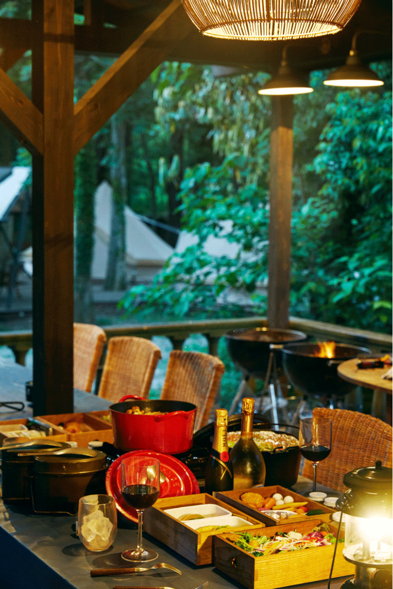

2022.06.17
日本が世界に誇るゴルフカントリークラブ「TOKYO CLASSIC CLUB」。そこに併設される会員限定のグランピング施設が「TOKYO CLASSIC CAMP CLUB」です。同施設が提唱する豊かな唯一無二のグランピングスタイルとは。なぜLG Stylerを設置したのか。お話を伺いました。
東関東自動車道の中野ICを降りて5分ほど。千葉の牧歌的な田舎道を走っていると、不意に海外の山道を走っているような錯覚に襲われます。それが訪れたら「TOKYO CALSSIC CAMP CLUB」はもうすぐそこ。積み上げた丸太と看板が私たちを迎えてくれます。
クラブハウスには古びたウッドのバーカウンターがあり、その向こうには手作りのウッドデッキ。受付を済ませてここを抜けると、会員限定のプライベートなグランピングエリアの始まりです。
クラブハウスからグランピングエリアをつなぐ小道はまるで、現実とは違う世界への入り口のよう。この十分なアプローチをゆっくりと歩くことでマインドもリセット。気持ちが穏やかになっていくのがわかります。
小道を抜け、グランピングエリアに入ると完全にプライベートな空間。都心から１時間ほどしか離れていない場所でありながらそれを感じさせない、日常を忘れさせてくれる豊かな空間がそこにはあります。
グランピングエリア内に用意されているのは5つのキャビンと6つのテント。スタイルや参加する人数に合わせて選ぶことができます。
グランピングエリア内に用意されているのは5つのキャビンと6つのテント。スタイルや参加する人数に合わせて選ぶことができます。
LG Stylerが設置されているのはその中の3つのキャビン。『AdamsCabin』と『BeaconCabin』、そして『DollyCabin』にそれぞれ１台ずつ設置されています。
「グランピング施設ではご自身で炭や薪を使って料理をしていただきますし、ゆったりとした空間での焚き火も醍醐味です。ただ、そうするとどうしてもお召し物に匂いがついてしまいます。それを気にされる方もいますし、中にはここからそのまま職場に向かわれる方もいらっしゃいますので、そういったことをストレスに感じてしまわれないよう、LG Stylerを設置させていただきました」。 そう教えてくれたのは、TOKYO CLASSIC CAMP CLUBマネージャーの谷垣雅一さん。
「評判はとてもいいです。臭いだけでなく、花粉やウイルスの除去にも効果があるとあって、これがあることで安心して下さる方も多いですね」。

食事も極上。食材はできるだけ千葉県産のものを使い、熟練のシェフがメニューを考案。全て準備された状態でサーブされるので手ぶらでOK。ドリンクも十分に用意されています。ちなみに食材やドリンクは持ち込みも可能。焚き火を楽しむ時間も格別です。
施設内にはバレルサウナも併設。大自然の中、プールで泳ぎながら体を冷やす経験は、なかなかできるものではありません。
朝は早く起きて、木漏れ日の中をのんびり散歩。それもまた他では味わることのできない特別な体験です。
前の晩のうちにLG Stylerでケアした上着を着て、身も心もリフレッシュした真新しい1日の始まりです。

Interview CATAL DESIGN